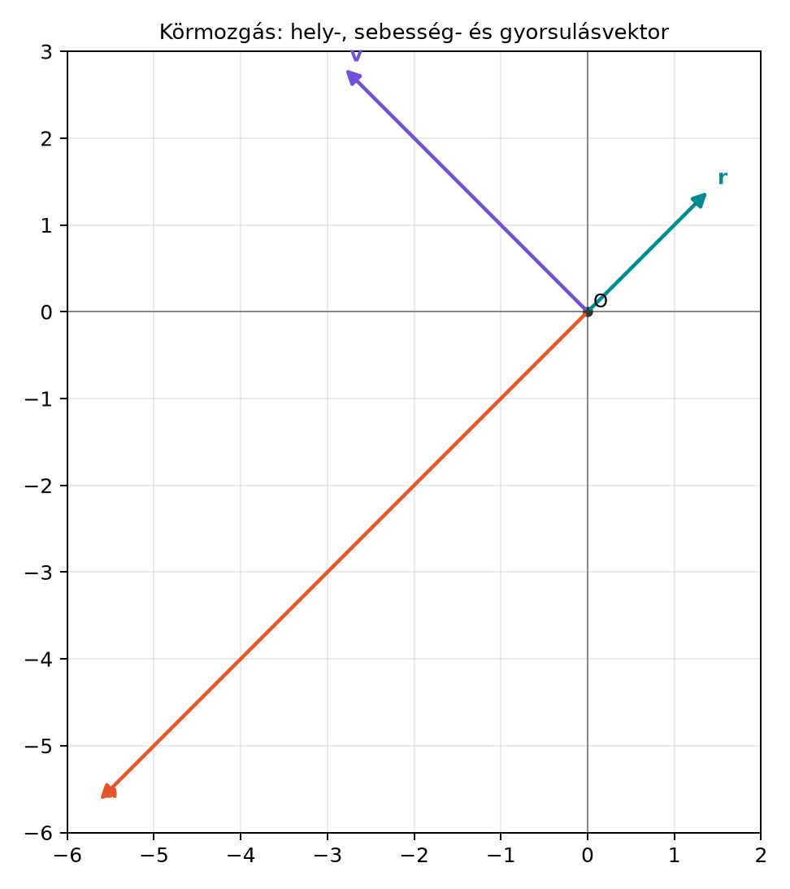

16.2 Vektor- és multivektor-értékű
függvények deriválása; körmozgás
16.2.1 Motiváció
Az előző, A derivált mint pillanatnyi
sebesség alfejezetben a deriváltat úgy vezettük be, mint egy
mennyiség pillanatnyi változási sebességét. Egy mozgó pont helyét
azonban a gyakorlatban nem egyetlen számmal, hanem egy vektorral adjuk
meg. Ha a pálya vektorértékű függvény, akkor a sebesség és a gyorsulás
kiszámításához nem kell új elmélet: komponensenként deriválunk. A
geometriai algebra akkor válik igazán hasznossá, amikor a mozgásnak egy
kitüntetett síkja van, például egyenletes körmozgásnál. Ott a
szögsebesség nem egy „tengelyre tűzött” vektor, hanem természetes módon
egy irányított síkdarab, azaz bivektor.
16.2.2 Szemléletes kép
Képzeljünk el egy korongot, amely másodpercenként
radiánt fordul az
irányban. A korong egy pontjának helyvektora egyenletesen forog: hossza
állandó, iránya pedig egyenletesen változik. A sebességvektor mindig
érintőirányú, tehát merőleges a helyvektorra, a gyorsulásvektor pedig a
kör középpontja felé mutat. Az alábbi ábrán egy
,
adatokkal jellemzett mozgás hely-, sebesség- és gyorsulásvektora látható
a
pillanatban.

Körmozgás: hely-, sebesség- és
gyorsulásvektor - A vektorok a t=π/4 pillanatban, R=2, ω=2 rad/s; a
gyorsulás a középpont felé mutat.
A rajzon jól látszik, hogy
merőleges
-re,
pedig
-rel
ellentétes irányú. A célunk az, hogy ezt a képet képlettel is pontosan
leírjuk.
A A derivált mint pillanatnyi sebesség
alfejezetben bevezetett definíciót vektorokra közvetlenül alkalmazzuk.
Ha a bázisvektorok,
és
,
időben állandóak, akkor az
Röviden: a bázist kiemeljük, és csak az együtthatókat deriváljuk.
Ugyanez érvényes térben, G(3)-ban is, ahol
.
Például ha
akkor
A sebességvektor tehát
,
a gyorsulásvektor pedig
.
16.2.4 Szorzatszabály a geometriai
szorzatra
A geometriai szorzat nem kommutatív, ezért a deriválásnál a tényezők
sorrendjét nem cserélhetjük fel. Ennek ellenére a szokásos
szorzatszabály formailag ugyanúgy néz ki, mint a valós
függvényeknél.
Tétel (szorzatszabály). Legyenek
és
differenciálható, multivektor értékű függvények. Ekkor
Bizonyítás. A deriváltat a differenciahányados
határértékeként írjuk fel. Először a különbséget alakítjuk át:
Mindkét oldalt
-val
osztjuk, majd
határértéket veszünk. Az első tag határértéke
,
a másodiké
,
mert
.
Ezzel az állítást beláttuk.
A sorrend azért fontos, mert általában
és
nem ugyanaz. Például ha
és
vektorértékű függvények, akkor
és a jobb oldalt nem írhatjuk
alakba, hacsak nem tudjuk külön, hogy
.
A szorzatszabályt azonnal használhatjuk az exponenciális forgató
deriválására is. Mivel
a komponensenkénti, illetve a szokásos függvényderiválás szerint
Itt felhasználtuk, hogy
.
A derivált tehát ugyanolyan alakú, mint a valós
esetében, csak a „szorzó” most a
bivektor.
16.2.5 Egyenletes körmozgás
A Forgatás a síkban: az exponenciális forgató
alfejezetben láttuk, hogy a
szorzat a
vektort
szöggel forgatja el pozitív irányban. Ha a szög egyenletesen nő, azaz
,
akkor a pálya egy kör, és a mozgás egyenletes körmozgás.
Definíció (egyenletes körmozgás és
szögsebesség-bivektor). Legyen
állandó vektor, és legyen
állandó skalár. Az
pályát egyenletes körmozgásnak nevezzük. A
bivektort szögsebesség-bivektornak (angular velocity
bivector) nevezzük. Ha
,
akkor a forgás az
síkban, az
pozitív irányban történik.
A
jelölés itt bivektor, nem vektor. A síkban ez a lehető
legtermészetesebb: a forgást nem egy „tengely”, hanem egy irányított sík
jellemzi.
Tétel (a körmozgás sebessége és gyorsulása). Az
egyenletes körmozgásra,
jelöléssel:
Bizonyítás. A sebességhez deriváljuk a pályát:
A
bivektor és az
páros fokszámú elem, ezért felcserélhetők. Így
Síkban a vektor és bivektor szorzata tiszta belső szorzat, mert a
külső szorzat egy trivektor lenne, G(2)-ben viszont nincs trivektor.
Ezért
A gyorsuláshoz deriváljuk a sebességet, és használjuk a
szorzatszabályt, valamint azt, hogy
állandó:
Mivel
,
és
,
Így
Ez pontosan a centripetális gyorsulás: az
helyvektorral ellentétes irányba, tehát a kör középpontja felé mutat,
nagysága pedig
ahol
a kör sugara.
16.2.6 Kidolgozott példa
Legyen a kör sugara
,
a szögsebesség nagysága
,
és induláskor
.
Ekkor
és
A sebesség általános képlete:
A gyorsulás pedig
A
pillanatban:
Ellenőrizzük a geometriai összefüggéseket:
tehát a sebesség merőleges a helyvektorra. A sebesség nagysága
a gyorsulás nagysága pedig
A gyorsulásvektor
,
vagyis az
helyvektorral ellentétes irányú: a középpont felé mutat.
16.2.7 A szögsebesség-bivektor és a
hagyományos szögsebességvektor
Hagyományosan a szögsebességet vektorként adják meg. G(3)-ban a
forgástengely irányába mutató
vektor és az
bivektor között a dualitás teremt kapcsolatot. A Dualitás: bivektor ↔︎ normálvektor, a × b = −I(a∧b)
alfejezetben bevezetett konvenció szerint
Ha például a forgás síkja
,
akkor
és
esetén
A hagyományos
vektor tehát a forgástengely irányába mutat. A hagyományos vektoros
összefüggés
ugyanazt fejezi ki, mint a geometriai algebrai
A két alak közötti egyezés abból következik, hogy a könyv konvenciója
szerint a vektoriális szorzat
,
így
A bivektoros alak azonban nem igényli a „tengely” fogalmát, ezért
síkban is értelmes, és később a merev testek leírásában is
egységesebb.
A szorzatszabályban a sorrend felcserélése. A
geometriai szorzat nem kommutatív, ezért
.
Helytelen lenne
-t
vagy
-t
írni anélkül, hogy tudnánk a tényezők kommutálását.
A derivált szorzó oldalának felcserélése. Az
deriváltja
.
Vektorral balról szorozva
jön ki. Mivel
és
kommutál, ezért ez egyenlő
-val,
de
-lal
nem cserélhető fel
.
A szögsebesség-bivektor és a szögsebességvektor
keverése. Az
bivektor, míg a hagyományos
vektor G(3)-ban az
duális. A síkban nincs is értelmes „tengelyvektor”, csak irányított
sík.
A centripetális gyorsulás előjele. A gyorsulás
,
tehát a középpont felé mutat. A
kifelé mutató, centrifugális irányú vektort adna, és hibás.
16.2.9 Feladatok
(a) Fogalmi kérdés. Magyarázd el, miért bivektor a
szögsebesség a síkbeli egyenletes körmozgásban, és hogyan kapcsolódik
hozzá a hagyományos szögsebességvektor G(3)-ban.
(b) Kézi számolás. Adott a G(2)-beli pálya:
Határozd meg a sebesség- és gyorsulásvektort, az
szögsebesség-bivektort, és ellenőrizd, hogy
merőleges
-re,
valamint
.
(c) Levezetési feladat. A szorzatszabály
felhasználásával vezesd le, hogy az
pályára
,
ha
.
(d) Alkalmazási feladat. Egy egyenletesen forgó
korong síkja G(3)-ban az
sík. A szögsebesség-bivektor
.
A korong egy pontjának helyvektora a
pillanatban
méter. Számítsd ki a pont sebességvektorát
-ban,
a sebesség nagyságát, valamint a centripetális gyorsulás vektorát és
nagyságát.
16.2.10 Megoldások
(a) A síkbeli forgatást a
pszeudoszkalár és egy
skalár határozza meg, ezért a természetes mennyiség
,
egy bivektor. Síkban nincs egyértelmű forgástengely, csak irányított
forgássík. G(3)-ban a hagyományos
vektor az
bivektor duálisa:
.
Például
esetén
.
(b) A pálya
,
ahol
és
.
Ezért
A sebesség:
A gyorsulás:
A merőlegesség:
A nagyságok:
(c) A pálya deriváltja:
Mivel
bivektor, kommutál a páros
elemmel, így
mert G(2)-ben vektor és bivektor szorzata tiszta belső szorzat.
(d) A szögsebesség-bivektor
,
a pont helyvektora
-ban
.
A sebesség:
A sebesség nagysága
.
A centripetális gyorsulás:
nagysága
.
16.2.11 Rövid összefoglaló
Vektorértékű függvényeket komponensenként deriválunk: ha
,
akkor
.
A geometriai szorzatra érvényes a szorzatszabály:
a tényezők sorrendjének megtartásával. Az egyenletes körmozgást
alakban felírva a szögsebesség-bivektor
.
A sebesség